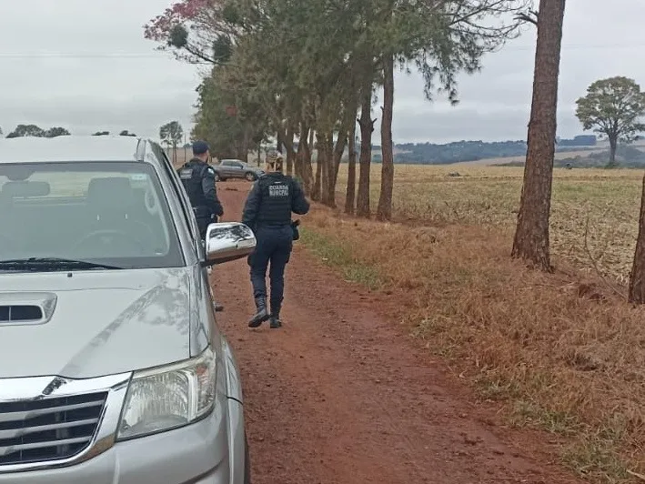

Nova invasão de propriedade rural no Oeste do Paraná
Equipes da Guarda Municipal de Guaíra foram mobilizadas na manhã desta segunda-feira (15) para atender uma ocorrência de invasão de propriedade privada. De acordo com a Guarda Municipal, as equipes foram acionadas por volta das 09h00 e se dirigiram a uma propriedade rural na estrada da Faixinha, na região do Taturi.
Imagens divulgadas nas redes sociais mostram um grupo de pessoas montando acampamento no local, que, a princípio, seria composto por indígenas. Agricultores também estão se deslocando para a área. Outras equipes policiais foram acionadas para a ocorrência.